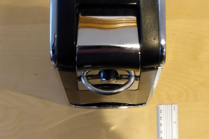
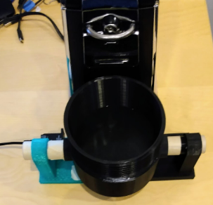
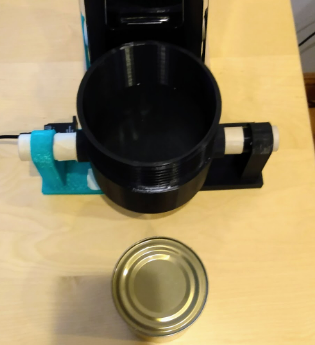
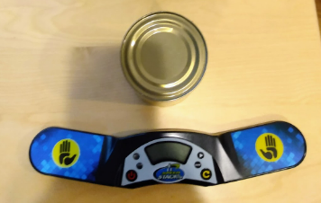
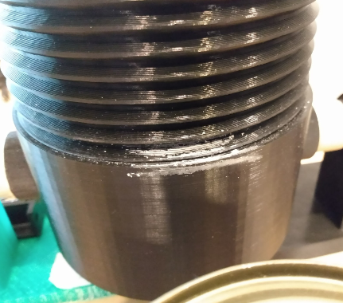
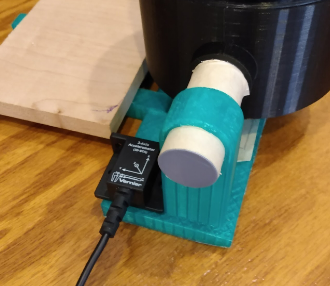

| Step 1 |
Place the can opener on a work surface in front of you and plug it into an outlet.
Push up on the hinged button on the top of the can opener such that it is in the "unlocked" position.
|
 |
| Step 2 |
Place the previously-assembled auxiliary device on the work surface.
Move the can opener to rest on the wood plate on top of the two bars coming out of the back of the auxiliary device.
Position the opener such that there is approximately one centimeter of space between the front of the opener and the front of the black basket on the auxiliary device.
|
 |
| Step 3 |
Place the food can on the work surface, approximately three inches in front of the front of the auxiliary device.
|
 |
| Step 4 |
Place the timer device approximately one inch in front of the can.
Power on the timer device. Reset any existing time.
|
 |
| Step 5 |
Rotate the cup such that the white crayon marking on the threads of the cup is aligned with the white crayon marking on the front of the basket.
|
 |
| Step 6 |
Connect the USB cable of the Vernier accelerometer to the computing device. Using Vernier Logger Pro, load the trial configuration (details omitted).
|
 |